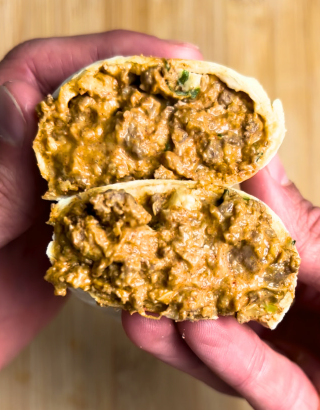

Cheesy Beef Burritos

Description
Beefy, cheesy burritos for a quick and easy meal prep.
Ingredients
- 1 pound 93% beef
- 1 packet of taco seasoning
- 200g 2% Greek yogurt
- 100g red enchilada sauce
- 2 laughing cow cheese wedges
- 2 tablespoons chopped cilantro
- 60g 2% cheddar
- 6 burrito tortillas
Steps
- Brown the ground beef on medium-high heat until fully cooked through and add in a packet of taco seasoning and about 1 TBSP of water. Optionally, add a dash of garlic powder, onion powder, and smoked paprika.
- Once fully combined, pour beef mixture into a bowl, and mix in greek yogurt, red enchilada sauce, laughing cow cheese wedges, chopped cilantro, and 2% cheddar cheese.
- Evenly distribute the mixture across 6 burrito sized tortillas, and wrap the burrito into aluminum foil or parchment paper, then store in the freezer.
- REHEAT INSTRUCTIONS: Microwave wrapped in a damp paper towel for 1 minute, 15 seconds (flip halfway) to defrost. Air fry at 360 for 6-7 minutes to crisp up tortilla and finish cooking interior (timing may vary based on appliance). Let sit for 5 minutes before eating.